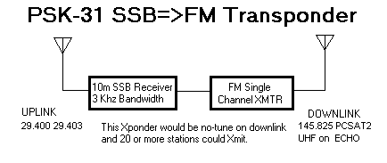
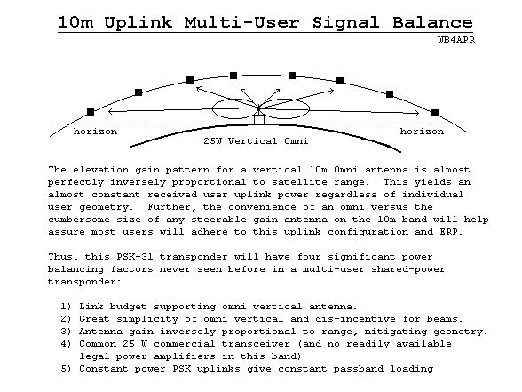

PSK-31
Linear/FM Satellite Transponder
27
Nov 2002
Bob Bruninga, WB4APR,
Peter Martinez, G3PLX
Mirek Kasal, OK2AQK
With the sweeping popularity of PSK-31 as a very narrowband and weak signal digital communications mechanism requiring only a PC sound card and radio, there is great potential to use PSK-31 as a low cost easy-entry satellite application. In only 3 KHz of bandwidth, as many as 20 or more simultaneous users can be accommodated. Usually, the same advantage of the very narrow bandwidth that makes this possible also tends to make normal operation via satellites impossible due to very high Doppler shifts. But the following idea solves that problem. It evolved from many ideas we explored with Peter Martinez back in 2000 while looking for ways to use PSK-31 via satellite. See the Paper. As this idea matured, we solicited Mirek Kasal, OK2AQ of Brno University to build the Flight Receiver

ADVANTAGES OF THE 10m Linear Uplink => FM Downlink
-
No
downlink Doppler (other than crude FM 5 KHz steps)
-
All
users remain in same relative position in analog passband
-
Stations
accommodate Uplink Doppler to fit in common analog Passband
-
Downlink
FM transmitter can be on 2m/70cm band with minimal Doppler issue
-
No
requirement for Linearity on Downlink Transmitter
-
Downside
is higher power budget and full power even if 1 user.
-
Each
user can adjust Uplink power for equal audio level in downlink
-
Easy
reception with any FM scanner
-
Uplink
Geometry on 10m band almost guarantees equal user signal levels
The
Doppler on the 10m band is about 15 times less than on 70 cm and changes at a
rate between about 1 to 5 Hz per second.
The following table is a worst case (350 km orbit) and it shows the rate
of change of Doppler for typical passes below the peak elevations shown.
50deg
40deg 30deg 20deg 10deg Peak Elevation
of Pass
-----
----- ----- ----- -----
4%
8% 16% 33%
67% Percentage of total passes above
this angle
-----
----- ----- ----- -----
0.1
0.2 0.3 0.7
1.2 Doppler change in Hz per
second
0.3
0.5 0.7 1.1
1.9
1.0
1.3 1.5 2.4
2.5
3.5
3.8 4.0 4.1
3.0
9.0
7.3 6.5 5.0
3.0 (Peter computes absolute
worst case is 16 Hz/Sec)
6.0
5.5 5.0 3.5
2.5
1.9
3.6 2.1 3.0
2.3
0.5
0.9 0.9 2.0
1.5
0.1
0.2 0.3 0.9
0.9
So
2/3rds of the time the Doppler rate of change is in the range of about 3 Hz per
second or less. It looks like 90% of the time it is 5 Hz or less. And worst case is 16 Hz change per
second. Peter G3PLX is working on a
second order AFC tracking loop to keep up with this dynamic rate of change. But it will be better if all users correct
their Doppler in their uplink instead of the downlink. Notice also that for LEO spacecraft the
Doppler rate of change is always downward.
For AO-40 in an elliptical orbit, however, the rate of change can be
either direction depending on whether the satellite is accelerating towards you
coming in from Apogee, or slowing down as it goes outward from Perogee.
Actually,
for software written for this application, it is best if the software adjusts
for this Doppler on the Uplink so that the relative position of everyone in the
passband will remain constant. This
should be easy to do, however, because the Satellite is full duplex, so your
sound card can be monitoring your signal on the downlink and making AFC changes
on the uplink to keep you at the same frequency on the downlink…
CONCEPT OF FULL DUPLEX PSK-31 OPERATIONS:
Because the software will be working FULL DUPLEX so that it can listen to its own Doppler shifted uplink in the downlink to run its AFC, this means that the user will typically operate KEY DOWN on 10m the whole 8 minute pass. But while he is transmitting, he will be SEEING everyone else on the band. Thus this will be a new mode of PSK-31 operations, kind of like a chat room full of people with everyone seeing what everyone is saying in real time and being able to KEYBOARD to them all as fast as one can type. Each pass will all be over in 8 minutes or less, though.
The ideal downlink band is on 2 meters where the Doppler is less than +/- 3 KHz so no FM downlink tuning is necessary if the deviation on the transmitter remains below about 3 KHz deviation. But if the 70 cm Amateur Satellite Downlink is required, then the operator will have to change the frequency of his UHF FM receiver 3 or 4 times a pass to keep up with the +/- 9 KHz of total FM carrier Doppler on the downlink.
To the right you can see a typical passband showing about 10 stations. Everyone sees the same spectrum and adjusts their uplink to keep their signal where they choose.
PASSBAND POWER SHARING:
One
of the biggest problems with linear transponders is power sharing of power in
the linear passband. This results in
the strongest signal getting most of the power at the expense of the other
operators. This is compounded when the
AGC reduces the overall passband gain to prevent the strongest signal from
overloading the system, which results in everyone losing power.
One
of the greatest advantages of this 10 meter PSK-31 Transponder is the inherent
self leveling of uplink power in the passband as enumerated in the following
diagram:

USER LICENSE REQUIREMENTS:
Another
unique aspect of this transponder is that it will be the first amateur
satellite to use 10 meters as the uplink band.
As noted above, all of the advantages of this PSK-31 low-doppler and
balanced passband design depend on the use of 10m as the uplink band. Unfortunately, the ARRL (and probably other
countries) band plans suggest only 29.300 to 29.510 for “Satellite
Downlinks”. This apparent limitation of
10m for only downlinks is only a legacy of the early Mode A satellites and is
not part of the FCC nor the ITU rules.
The entire 10m band is legal from that perspective. A second issue is that only the 28.1 to 28.3
MHz sub band is authorized for Novice and Tech-Plus licensees in the USA.
Therefore,
we originally proposed that this PSK-31 Satellite UPLINK be a 3 KHz wide
spectrum somewhere in the 28.1 to 28.3 MHz CW/Digital sub-band not only so that
Novice and Tech-Plus operators may use it, but also, to prevent the obvious
temptation for an SSB user to saturate the entire passband with his single
Voice QSO. Currently PSK-31 QSO’s on
the 10m band congregate near 28.120 and a Transceiver Kit crystal controlled on
that frequency is readily available from Small Wonder Labs making
this an easy satellite for students to access.
In
the future, I would like to proceed with the Frequency Coordination process to
request an assignment of 28.117 to 28.120 MHz CW/Digital band for such a PSK-31
satellite uplink. This seems like a
good choice since it is immediately adjacent to the 28.120 to 28.1235 PSK-31
segment and can be easiliy tuned by the crystal controlled PSK-31 Transcevier
kits readily available. See the Band Plan
Send comments to WB4APR@amsat.org.
{kind=link}
{kind=link}